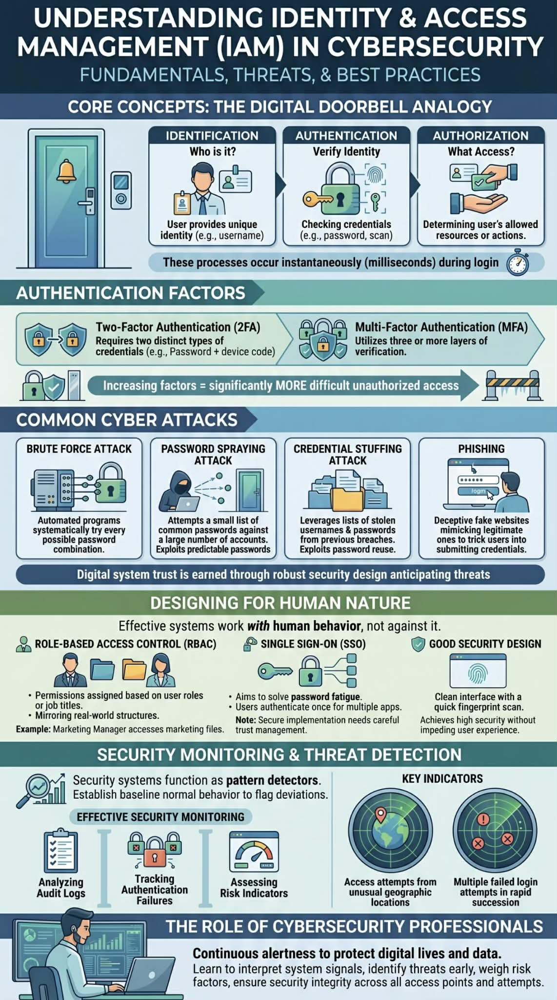

Every day, we log into our accounts. We type a name and a password, and we are "in." But as a cybersecurity student, I've started to look at this simple act differently. It's not just a habit—it's Identity and Access Management (IAM) happening in real time.
The Digital Doorbell
Think about when someone rings your doorbell. You ask "Who is it?" — that's identification. You look through the peephole — that's authentication. And you decide whether to let them all the way in or just to the door — that's authorization. Every login works the same way, just in milliseconds.
Most of the time when we log in, we use two factors — a password plus a code sent to our phone. That's Two-Factor Authentication (2FA). But some systems go further and stack a third layer, like a fingerprint on top of that. The more factors required, the harder it is for someone else to get in — that's the idea behind Multi-Factor Authentication (MFA).
Behind every login button is someone who wants their photos, messages, and work to stay private. And behind the scenes, a system is instantly deciding not just whether your password is correct, but whether you are allowed to see what you are asking for.

The Attacks That Never Sleep
Here's what really opened my eyes: while we're typing our passwords, there's a constant stream of digital security attacks happening. Brute force attacks are like someone trying every possible key to get access to our resources—automated programs attempting millions of password combinations per second. Password spraying attacks are smarter; they try a few common passwords like "123456" against thousands of accounts, knowing people choose predictable patterns.
Credential stuffing attacks take passwords stolen from one data breach and systematically test them across hundreds of other sites, exploiting our tendency to reuse the same password everywhere. Then there's phishing—sophisticated fake websites that look exactly like the real thing, tricking people into typing their credentials directly to attackers.
Learning about these methods has made me realize that trust in digital systems is earned, not assumed—it comes from understanding how they are built to handle a never-ending stream of threats.
Designing for Human Nature
The most fascinating part of studying cybersecurity isn't the technical complexity — it's realizing how much it's about human psychology. Good security systems don't fight human behaviour, they are built to work with it.
Different access control models like Role-Based Access Control (RBAC) work because they mirror how we naturally think about permissions in the real world. Your job title determines what files you can access.Single Sign-On (SSO) systems solve a very human problem: password fatigue. Instead of remembering dozens of passwords, you authenticate once and access multiple applications. But making SSO work securely means every connected system needs to trust each other in the right way — and that takes careful planning.
When my phone asks for my fingerprint, a lot is happening in the background — verifying who I am and logging the attempt — but from my side, it's just a quick touch. That's good security design: it works without getting in the way.
Reading the Patterns
Security systems are essentially pattern detectors — they establish a baseline of expected behaviour, so anything that deviates from it gets flagged immediately.
Understanding attack vectors has shown me that effective security monitoring means analyzing audit logs, tracking authentication failures, and assessing risk indicators across thousands of daily interactions. When someone tries to access systems from an unusual location or attempts multiple failed logins, those signs are worth paying attention to.
Choosing cybersecurity means staying alert so that everyone's digital life and data stays protected. I'm learning to read what systems are telling us — spotting threats early, weighing risk factors, and making sure security holds across every login and every access attempt. I think it is very rewarding.


Comments